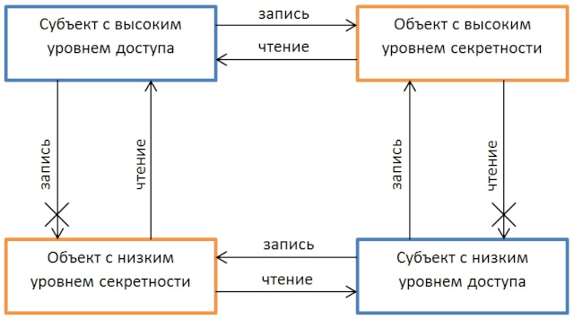
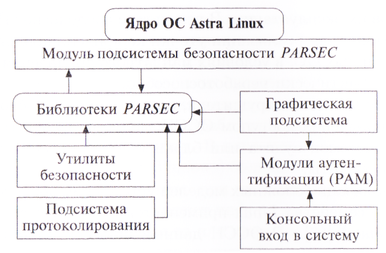
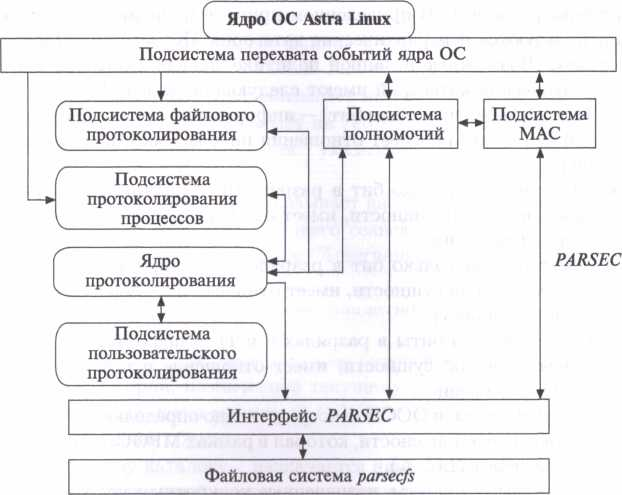
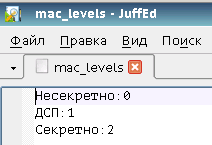
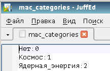

1.Проблемы реализации мандатного управления доступом в операционных системах
В современных безопасных системах может быть реализована комбинация дискреционного (избирательного) разграничения доступа (Discretionary Access Control, DAC), ролевого разграничения доступа (Role Based Access Control, RBAC) и мандатного (принудительного, обычно многоуровневого) разграничения доступа (Mandatory Access Control, MAC). Как правило, они реализуются именно в таком порядке: следующий «поверх» предыдущего. То есть ресурс, доступный по правилам мандатного доступа, заведомо доступен по правилам дискреционного доступа, но не наоборот.
Astra Linux унаследовал от традиционного для ОС семейства Linux механизм дискреционного управления доступом. Как известно, данный механизм позволяет явно разрешать или запрещать те или иные доступы субъектов к сущностям, но не позволяет управлять информационными потоками, содержащими информацию различных уровней конфиденциальности. Например, после того как данные из некоторой сущности прочитаны процессом (субъект-сессией), он потенциально может записать их в любую другую сущность, доступную ему на запись, и механизм дискреционного управления доступом не сможет этому воспрепятствовать. Аналогично, если полномочия учётной записи пользователя, от имени которой выполняется процесс, позволяют воспользоваться электронной почтой, то прочитанные данные могут быть направлены на любой адрес сети Интернет. Таким образом, отсутствие при использовании механизма дискреционного управления доступом чётких понятных всем пользователям ОССН правил обработки конфиденциальной информации может являться причиной для её утечки.
По этой причине базовым при реализации защиты в ОССН стал построенный на основе МРОСЛ ДП-модели механизм мандатного управления доступом. Несмотря на ряд неоспоримых преимуществ этого механизма, его эффективное применение в ОССН возможно только при понимании особенностей настройки и знании типичных ошибок реализации мандатного управления доступом в современных многопользовательских многозадачных распределенных ОС. Среди многих пользователей таких ОС распространено убеждение, что мандатное управление доступом (к тому же реализованное на основе устаревшей модели Белла-ЛаПадулы) — своеобразная «серебряная пуля», позволяющая избавиться от утечек, конфиденциальных данных раз и навсегда.
Рисунок 1. Дискретное и мандатное разграничение доступа.
Модель Белла — ЛаПадулы — модель контроля и управления доступом, основанная на мандатной модели управления доступом. В модели анализируются условия, при которых невозможно создание информационных потоков от субъектов с более высоким уровнем доступа к субъектам с более низким уровнем доступа.
Это неверно, мандатное управление доступом не создаёт абсолютно непреодолимой защиты, существует целый ряд стандартных приёмов его обхода, рассмотрим некоторые из них:

Рисунок 2. Диаграмма информационных потоков в Модели Белла — Лападулы.
Реализация перечисленных приёмов для каждой конкретной ОС требует нахождения и последующей эксплуатации её концептуальных или алгоритмических уязвимостей. Разработка системы мандатного управления доступом, не содержащей уязвимостей и не позволяющей реализовать ни один из перечисленных или аналогичных подходов, возможна лишь теоретически. Например, на практике можно либо значительно затруднить создание нарушителем рассмотренных запрещённых информационных потоков, либо сделать их пропускную способность очень низкой. Поэтому кратко рассмотрим наиболее существенные проблемы, стоящие перед разработчиками системы мандатного управления доступом.
Двунаправленные информационные потоки. В формальных моделях безопасности мандатного управления доступом часто предполагают, что контролируемые информационные потоки являются однонаправленными. Если, например, субъект-сессия читает содержимое некоторой сущности, то данные передается только в одну стороны — от сущности к субъекту, но не наоборот. На практике это условие верно, если сущность является, например, файлом локальной файловой системы ОССН, но может нарушаться при обращении к сетевым файлам и некоторым другим сущностям.
Низкоуровневая техническая реализация доступа на чтение может предполагать, что запрос на чтение передаётся от субъекта к сущности по тому же самому каналу связи, что и ответ на него. Тогда разрешённому информационному потоку на чтение от сущности с низким уровнем конфиденциальности к субъекту с высоким уровнем доступа предшествует запрещённый информационный поток в обратном направлении. Заметим, что данное противоречие не является отличительной особенностью программной реализации мандатного управления доступом, оно проявляется и в безмашинном, бумажном документообороте (всякий раз, когда, например, осуществляется обращение к источнику неконфиденциальной информации, сам факт такого обращения может рассматриваться как утечка информации).
Рассмотрим пример. Пусть процесс с высоким уровнем доступа обращается на чтение к файлу, имеющему низкий уровень конфиденциальности и расположенному на удалённом сервере, доступ к которому осуществляется посредством протокола TCP. Для инициатора запроса этот запрос не противоречит правилам мандатного управления доступом и должен быть выполнен. Но низкоуровневая программная реализация запроса в ядре ОС предполагает отправку серверу пакета, содержащего запрос на установку TCP-соединения, и поскольку этот пакет исходит от процесса с высоким уровнем доступа, он тоже получает высокий уровень конфиденциальности. Если процесс-сервер, которому адресован запрос, имеет низкий уровень доступа, то он не сможет прочитать данный пакет и соединение не будет установлено. Если же процесс-сервер имеет высокий уровень доступа, то соединение будет успешно установлено, но все данные, передаваемые процессом-сервером, тоже будут иметь высокий уровень конфиденциальности.
В современном мире разработка сложного ПО ведётся с использованием механизмов инкапсуляции, когда высокоуровневый программный код прикладного или системного ПО абстрагируется от особенностей реализации функций низкоуровневым программным кодом. В рамках данной парадигмы прикладное ПО не должно учитывать, на каком носителе, локальном или сетевом, размещается читаемый им файл. Реализуемый в ПО алгоритм должен работать одинаково и для локального диска, и для удалённого сервера. Мандатное управление доступом в общем случае нарушает эту парадигму. В результате разработчикам мандатного управления доступом приходится либо перерабатывать и адаптировать значительную часть прикладного ПО, либо мириться с тем, что некоторые запрещённые информационные потоки в ряде случаев всё-таки могут быть реализованы.
Проблемы совместимости с прикладным ПО. Часто сложное системное или прикладное ПО требует особой доработки для обеспечения корректного функционирования в ОС, реализующей мандатное управление доступом. Все ПО, входящее в дистрибутив ОССН, подвергается такой доработке, однако в случае установки в ОССН дополнительных программных пакетов Linux могут возникать ошибки. Например, если некоторый текстовый редактор для своей работы требует одновременного доступа на чтение и запись к нескольким его конфигурационным файлам (словарей, стилей, настроек графического интерфейса и т. д.), то его работа с документами различных уровней конфиденциальности может привести к многочисленным ошибкам и сделать невозможным использование этого редактора.
Присвоение уровней конфиденциальности системным и служебным сущностям. В рамках МРОСЛ ДП-модели рассматривались примеры особенных системных сущностей ОССН (например, файлов /dev/null или /dev/zero), к которым доступ на чтение и запись должен предоставляться субъект-сессиям (процессам), имеющим различные уровни доступа.
/dev/null — специальный файл в системах класса UNIX, представляющий собой т. н. «пустое устройство». Запись в него происходит успешно, независимо от объёма «записанной» информации. Чтение из /dev/null эквивалентно считыванию конца файла (EOF).
Чаще всего перенаправление в /dev/null используется для подавления стандартного вывода (выходного потока) и/или вывода сообщений об ошибках (потока диагностики) программы их перенаправлением в /dev/null, такое подавление чаще всего используется в командных сценариях (shell scripts) для подавления нежелательного вывода на консоль.
В противном случае большая часть пользовательского и системного ПО ОССН утратило бы свою работоспособность. В связи с этим пришлось описать особый порядок доступа к этим сущностям, что усложнило как саму модель, так и её реализацию непосредственно в ОССН.
Таким образом, выявление таких сущностей в ОССН, поиск путей их безопасного использования является самостоятельной сложной проблемой, стоящей перед разработчиками ОССН.
Асинхронный ввод-вывод. В ядре современных ОС (например, ОС семейства Microsoft Windows) большинство операций ввода- вывода выполняются асинхронно, при этом низкоуровневые компоненты ОС, как правило, не владеют информацией о том, в контексте какого запроса выполняется та или иная операция ввода-вывода. Часто затруднительно даже определить, каким субъектом доступа инициирован тот или иной фрагмент запроса. Если ОС поддерживает только дискреционное управление доступом, это несущественно — права доступа субъекта проверяются до начала выполнения запроса, а в ходе выполнения запроса они изменяться не могут. Но если в ОС реализовано мандатное управление доступом, состоявшийся доступ субъекта к конфиденциальной информации может потребовать отменить одну или несколько асинхронных операций ввода-вывода, выполняющихся в данный момент.
В ОС семейства Linux, а значит, и в ОССН, асинхронный ввод- вывод применяется ограниченно, и используемые для программные интерфейсы сравнительно просты. Их адаптация к правилам мандатного управления доступом не создаёт серьёзных проблем.
2.Реализация мандатного управления доступом в ОССН
Как уже отмечалось, основной задачей, решаемой мандатным управлением доступом в современных защищённых ОС, является не полное блокирование каналов утечки конфиденциальной информации, а существенное затруднение их реализации нарушителем. Даже если в ОССН имеются уязвимости, позволяющие в определённых условиях нарушать правила мандатного управления доступом, само наличие этих правил позволяет заметно повысить защищённость ОССН, поскольку:
Для реализации сложных моделей управления доступом в большинстве ОС семейства Linux
применяется пакет Security Enhanced Linux (SELinux). В ОССН данный пакет не используется по следующим причинам:
Реализация мандатного управления доступом в ОССН основана на подсистеме безопасности PARSEC, самостоятельно разработанной ОАО «НПО «РусБИТех» и включающей соответствующие программный интерфейс и модуль расширения ядра ОССН, поддерживающий виртуальную файловую систему /parsecfs, и набор системных вызовов, позволяющих уполномоченным пользователям управлять политикой безопасности ОССН.

Рисунок 3. Архитектура подсистемы защиты ОССН.
Помимо мандатного управления доступом, подсистема безопасности PARSEC также реализует мандатный контроль целостности и дополнительные функции аудита. На рис. 3.1 показано место подсистемы безопасности PARSEC в архитектуре ОССН и порядок её взаимодействия с другими компонентами ОССН.
Модуль PARSEC устанавливает в ядре ОССН собственные обработчики контролируемых информационных потоков, которые получают управление всякий раз, когда необходимо принять решение, следует ли разрешить или запретить то или иное обращение субъекта к сущности. Эти обработчики функционируют автономно, непосредственное взаимодействие модуля PARSEC с другими компонентами подсистемы защиты происходит лишь в тех случаях, когда клиентская программа получает информацию о действующей политике безопасности или модифицирует эту политику. Рис. 4 иллюстрирует внутреннюю архитектуру модуля PARSEC. Подсистема МАС – подсистема Mandatory Access Control.

Рисунок 4. Архитектура модуля PARSEC.
Файл /etc/parsec/mac_levels содержит перечисление поддерживаемых в данном экземпляре ОССН наименований мандатных уровней, например:
Несекретно:0
ДСП:1
Секретно:2
 
В файле /etc/parsec/mac_categories перечисляются поддерживаемы в данном экземпляре ОССН наименования неиерархических категорий, например:
Космос:0
Ядерная_энергия:1
При реализации в ОССН неиерархических категории представляются битовой маской, в которой каждая категория представлена одним разрядом. В приведённом примере политики безопасности используются неиерархические категории «Космос» и «Ядерная энергия». Возможные в данной политике значения битовой маски неиерархических категорий имеют следующий смысл:
0 (не установлен ни один бит) — информация, хранящаяся в данной сущности, не имеет отношения ни к космосу, ни к ядерной энергии;
1 (установлен только бит в разряде 0) — информация, хранящаяся в данной сущности, имеет отношения к космосу, но не к ядерной энергии;
2 (установлен только бит в разряде 1) — информация, хранящаяся в данной сущности, имеет отношения к ядерной энергии, но не к космосу;
3 (установлены биты в разрядах 0 и 1) — информация, хранящаяся в данной сущности, имеет отношение и к космосу, и к ядерной энергии.
Таким образом, в ОССН непосредственно определяется решётка многоуровневой безопасности.
Мандатные атрибуты, назначенные конкретным учётным записям пользователей, перечисляются в каталоге /etc/parsec/macdb. Для каждой учётной записи пользователя, которой указан ненулевой мандатный уровень или непустой перечень неиерархических категорий, создается текстовый файл, имя которого совпадает с UID учётной записи пользователя. Файл включает в себя единственную строку вида
<username>:<min_level>:<min_categories>: <max_level>:<max_categories>
где:
username — имя учётной записи пользователя;
min_level — минимальный мандатный уровень, доступный процессам от имени учётной записи пользователя;
min_categories — числовое значение битовой маски, задающее минимальный набор неиерархических категорий, установленных для данной учётной записи пользователя;
max_level — максимальный мандатный уровень, доступный процессам от имени учётной записи пользователя;
max_categories — числовое значение битовой маски, задающей максимальный набор неиерархических категорий, установленный для данной учётной записи пользователя.

Файл /etc/parsec/mас содержит строку аналогичного формата для суперпользователя root, по умолчанию равную:
root:0:0:0:0

Рисунок 9. Содержимое файла /etc/parsec/mас
Мандатные метки сущностей ОССН по умолчанию распределяются следующим образом.
Корневому каталогу / назначается наивысший мандатный уровень, поддерживаемый в текущем экземпляре ОССН (по умолчанию 3), в битовой маске неиерархических категорий устанавливаются все биты, устанавливаются атрибуты CCNR и CCNRI. Данный набор настроек фактически указывает, что в файловой системе ОССН могут храниться любые сущности с любыми мандатными метками, при этом мандатный уровень сущностей не может превосходить максимально возможного значения, назначенного каталогу /. При этом процесс с любым уровнем доступа, даже минимальным, может обратиться внутрь корневого каталога /.

Рисунок 10. Мандатные метки корневого каталога /.
Системным каталогам /bin, /boot, /etc, /lib, /НЬ32, /lib64, /lost-]-found, /media, /mnt, /opt, /proc, /root, /sbin, /selinux, /srv, /sys, /usr назначается нулевой мандатный уровень и пустая (нулевая) маска неиерархических категорий, атрибуты CCNR, и CCNRI не выставляются. Этим гарантируется невозможность создания в вышеперечисленных каталогах конфиденциальных сущностей, что устраняет большую часть проблем совместимости системного и прикладного ПО с мандатным управлением доступом. Если администратор не подвергал серьезным изменениям политику безопасности, заданную в ОССН по умолчанию, присвоение ненулевых мандатных меток программным файлам и файлам конфигурации исключено и блокирование доступа к ПО в результате ошибочного «засекречивания» сущностей, необходимых для функционирования ПО, невозможно.

Стоит особо отметить каталог /media. Большинство сменных носителей информации в ОССН по умолчанию монтируется в каталог /home/%user%/media, этим гарантируется невозможность несанкционированного доступа одного пользователя к сменным носителям, принесённым в систему другим пользователем. Однако компакт-диски в Linux-системах традиционно монтируются в каталог /media, одинаково доступный процессам, выполняющимся от имени любых учётных записей пользователей, и отказ от этого соглашения породил бы серьёзные проблемы совместимости. В подавляющем большинстве случаев файловая система компакт-диска не допускает хранения мандатных меток, и корректно обеспечить управление доступом к конфиденциальной информации, хранящейся на компакт-диске, затруднительно. Поэтому в ОССН хранение конфиденциальной информации на компакт-дисках запрещено, все файлы и каталоги, размещённые на компакт-дисках, всегда имеют нулевые мандатные метки. Заметим, что это предотвращает нарушение правил обращения с конфиденциальными файлами, когда эти файлы бесконтрольно переносятся с компьютера на компьютер с помощью перезаписываемых компакт-дисков. В перспективе эта технология может быть улучшена с использованием специально включённых для этого в МРОСЛ ДП-модель прямых и косвенных меток сущностей.
 Каталогу /dev, в котором хранятся системные сущности, связанные с устройствами компьютера, назначается наивысший мандатный уровень и все неиерархические мандатные категории, устанавливается атрибут CCNR. Это позволяет создавать в ОССН устройства (например, USB-порты), через которые разрешён вывод из системы конфиденциальных данных. По умолчанию данная возможность не применяется, для того чтобы начать её использовать, необходимо обладать полномочиями суперпользователя и привилегией parsec_cap_chmac. Аналогичные мандатные атрибуты присваиваются каталогам /run и /var. В типовых конфигурациях ОССН все сущности, расположенные в каталогах /dev, /run и /var, имеют нулевые мандатные метки. Каталог виртуальной файловой системы /parsecfs содержит системные сущности, используемые ОССН внутренне, данному каталогу присваивается нулевой мандатный уровень, нулевая битовая маска неиерархических категорий и атрибут EHole.
Каталогу /dev, в котором хранятся системные сущности, связанные с устройствами компьютера, назначается наивысший мандатный уровень и все неиерархические мандатные категории, устанавливается атрибут CCNR. Это позволяет создавать в ОССН устройства (например, USB-порты), через которые разрешён вывод из системы конфиденциальных данных. По умолчанию данная возможность не применяется, для того чтобы начать её использовать, необходимо обладать полномочиями суперпользователя и привилегией parsec_cap_chmac. Аналогичные мандатные атрибуты присваиваются каталогам /run и /var. В типовых конфигурациях ОССН все сущности, расположенные в каталогах /dev, /run и /var, имеют нулевые мандатные метки. Каталог виртуальной файловой системы /parsecfs содержит системные сущности, используемые ОССН внутренне, данному каталогу присваивается нулевой мандатный уровень, нулевая битовая маска неиерархических категорий и атрибут EHole.
 Каталогу /tmp, используемому для хранения временных файлов и автоматически очищаемому при каждой перезагрузке ОССН, назначается наивысший мандатный уровень и все неиерархические мандатные категории, устанавливаются атрибуты CCNR и EHole.
Каталогу /tmp, используемому для хранения временных файлов и автоматически очищаемому при каждой перезагрузке ОССН, назначается наивысший мандатный уровень и все неиерархические мандатные категории, устанавливаются атрибуты CCNR и EHole.
Рисунок 14. Мандатные метки каталога /tmp.
Указанные настройки фактически являются единственно возможной комбинацией мандатных атрибутов, обеспечивающей приемлемый уровень совместимости ОССН с прикладным и системным ПО, написанным для других Linux-систем. При этом функции мандатного управления доступом внутри данного каталога фактически отключены. Данная политика создаёт потенциальную возможность утечки конфиденциальных данных через временные файлы и тем самым несколько снижает защищённость ОССН. С другой стороны, она существенно повышает совместимость ОССН с прикладным и системным ПО, разработанным для Linux-систем, не поддерживающих мандатного управления доступом. Обычно (если данная функция не отключена администратором ОССН) каталог /tmp подвергается виртуализации, все обращения процессов к данному каталогу перенаправляются к одному из подкаталогов каталога
/var/private/tmp в зависимости от мандатных атрибутов процесса, осуществляющего обращение. В результате утечка конфиденциальных данных через временные файлы в результате непреднамеренных действий пользователя исключена. При необходимости для конкретного экземпляра ОССН назначение каталогу /tmp атрибута EHole может быть отменено пользователем, обладающим привилегией parsec_cap_chmac.
Каталог /home, содержащий домашние каталоги пользователей, имеет наивысший мандатный уровень, ему присвоены все неиерархические мандатные категории и атрибут CCNR. Такие же мандатные атрибуты присваиваются служебному подкаталогу /home/.pdp. Мандатные атрибуты домашних каталогов пользователей (/home/%username%) соответствуют мандатным атрибутам учётных записей пользователей, указанным при их регистрации.
Домашние каталоги пользователей подвергаются виртуализации в зависимости от параметров его сеанса. В каталоге /home/ .pdp создаются подкаталоги вида /home/ .pdp/% username%, в каждом из которых создаются подкаталоги вида
/home/.pdp/%username%/<level>:<int>:<category>:0, где:
<level> — мандатный уровень сеанса работы пользователя в ОССН;
<int> — мандатный уровень целостности сеанса работы пользователя в ОССН;
<category> — числовое значение битовой маски неиерархических категорий, заданной для сеанса работы пользователя с ОССН.
Четвёртый элемент имени подкаталога зарезервирован для будущих версий ОССН, в текущей версии он всегда равен нулю.
При инициализации сеанса работы пользователя в ОССН все обращения к домашнему каталогу (т. е. имена файлов и каталогов, начинающиеся с /home/% userпате%) преобразуются в обращения к тому подкаталогу каталога /home/.pdp/% userпате%, который соответствует мандатным атрибутам текущего сеанса. В результате пользователь в каждом сеансе работы с ОССН «видит» в своём домашнем каталоге только те файлы и подкаталоги, мандатные атрибуты которых соответствуют мандатным атрибутам текущего сеанса. Это не означает, что файлы и подкаталоги, созданные в сеансах работы с другими мандатными атрибутами, недоступны. Они доступны, но для доступа к ним нужно указать полное имя вида
/home/ .pdp/% username% / <level>: < int>: < category>:0,
что практически невозможно сделать случайно. Виртуализация домашних каталогов пользователей позволяет радикально сократить число сбоев при работе в ОССН системного и прикладного ПО, предназначенного для Linux-систем, не поддерживающих мандатного управления доступом.
3.Администрирование мандатного управления доступом в ОССН
Основные функции администрирования подсистемы мандатного управления доступом ОССН реализуются графической утилитой «Управление политикой безопасности», доступной в элементе «Настройки» главного пользовательского меню. Интерфейс этой утилиты интуитивно ясен, при этом большинство её функций доступны только учётным записям пользователей, входящим в группу astra-admin.
 Используемые в ОССН уровни доступа и конфиденциальности определяются в разделе «Мандатные атрибуты / Уровни».
Используемые в ОССН уровни доступа и конфиденциальности определяются в разделе «Мандатные атрибуты / Уровни».
Рисунок 15. Задание уровней доступа и конфиденциальности для ОССН
Каждому уровню соответствует числовое значение, чем оно больше, тем более конфиденциальной считается информация, отнесённая к данному уровню. Администратор ОССН может создавать или удалять уровни, а также редактировать наименование уровня — произвольную текстовую строку, используемую программами при отображении сущностей, отнесённым к данному уровню. Наименование уровня не оказывает никакого влияния на порядок обработки информации, отнесённой к нему.
Неиерархические категории определяются в разделе «Мандатные атрибуты/Категории», например, так, как показано на рисунке, представленном ниже

Рисунок 16. Пример задания неиерархических категорий
Назначение учётной записи пользователя уровня доступа и набора неиерархических категорий осуществляется во вкладке «МРД» раздела «Пользователи и группы / Пользователи / Локальные пользователи».

Рисунок 17. Назначение учётной записи пользователя уровня доступа и набора неиерархических категорий
По умолчанию все мандатные атрибуты учётной записи пользователя имеют нулевые значения, что запрещает ему всякий доступ к сущностям, содержащим данные, отнесённые к любой неиерархической категории.
При необходимости параметры мандатного управления доступом можно назначать не только учётным записям «физических»
пользователей, но и учётным записям системных пользователей (их часто называют псевдопользователями), предназначенных для обеспечения функционирования ОССН. Делать это без веских причин не рекомендуется, назначение ненулевых уровней доступа учётной записи системного пользователя может привести к непредсказуемому поведению процессов, выполняющихся от её имени.
Альтернативный способ управления мандатными уровнями доступа учётных записей пользователей предоставляет команда pdp-ulbls. Например, для просмотра уровней доступа она используется следующим образом (рис. 18):
pdp-ulbls <user>, где user — имя пользователя.

Рисунок 18. Пример вывода параметров мандатного управления доступом командой pdp-ulbls
При использовании команды pdp-ulbls для изменения уровней доступа и неиерархических категорий её типичный набор параметров является следующим:
pdp-ulbls -m<min>:<max> -c<cat-min:cat-max> <user>,
где:
min — минимальный мандатный уровень доступа, задаваемый для учётной записи пользователя;
max — максимальный мандатный уровень доступа, задаваемый для учётной записи пользователя;
cat-min — числовое значение битовой маски, определяющей минимальный набор неиерархических категорий, задаваемый для учётной записи пользователя;
cat-max — числовое значение битовой маски, определяющей максимальный набор неиерархических категорий, задаваемый для учётной записи пользователя.
С администрированием мандатного управления доступом в ОССН связано 7 привилегий,  устанавливаемых в разделе «Привилегии» отдельно для каждой учётной записи пользователя (рис. 19).
устанавливаемых в разделе «Привилегии» отдельно для каждой учётной записи пользователя (рис. 19).
Рисунок 19. Задание привилегий для администрирования мандатного управления доступом
Данные привилегии имеют следующее назначение:
parsec_cap_setmac — разрешает изменять мандатные уровни доступа и неиерархические категории процессов и назначать им привилегии;
parsec_cap_chmac — разрешает изменять мандатные уровни конфиденциальности и неиерархические категории сущностей. Может назначаться учётным записям пользователей, уполномоченным исправлять ошибочно присвоенные значения этих параметров. Если, например, файл с неконфиденциальным содержанием ошибочно помечен мандатной меткой «секретно», исправить эту ошибку без привилегии parsec_cap_chmac затруднительно;
parsec_cap_ignmeiclvl — отключает для учётной записи пользователя правила мандатного управления доступом в части, касающейся уровней доступа. Может временно назначаться учётным записям пользователей для устранения проблем, вызванных некорректным определением политики мандатного управления доступом. Если, например, действующая политика привела к тому, что файлы пользовательской конфигурации получили ненулевые уровни конфиденциальности, устранить эту проблему без временного назначения пользователю данной привилегии затруднительно. Привилегия parsec_cap_ignmeiclvl предназначена только для временного применения, не следует назначать её никаким учётным записям пользователей на постоянной основе — она фактически отключает мандатное управление доступом для этих учётных записей, тем самым создаётся брешь в безопасности ОССН;
parsec_cap_ignmaccat — отключает для учётной записи пользователя правила мандатного управления доступом в части, касающейся неиерархических категорий. Аналогично привилегии parsec_cap_ignmaccat, эта привилегия предназначена только для временного применения при устранении проблем, вызванных некорректной настройкой политики мандатного управления доступом;
parsec_capsig — позволяет посылать процессам сигналы, игнорируя правила управления доступом, используется внутри ОССН (не должна назначаться учётным записям «физических» пользователей);
parsec_cap_readsearch — позволяет игнорировать правила мандатного управления доступом при чтении файлов и каталогов, но не при записи. Предназначена для использования при резервном копировании данных, к которым пользователь, выполняющий копирование, может не иметь доступа при других обстоятельствах;
parsec_cap_macsock — разрешает изменять мандатные уровни конфиденциальности и неиерархические категории сокетов. Используется для обеспечения работоспособности самой ОССН, в связи с этим не следует назначать её никаким учётным записям «физических» пользователей.
начиная сеанс работы с ОССН, указывает мандатные уровни доступа и неиерархические категории для предстоящего сеанса в окне сразу после ввода корректного его имени и пароля.

Рисунок 20. Окно ввода параметров мандатного управления доступом при входе пользователя в ОССН.
Элементы окна имеют следующее назначение:
«Уровень» — мандатный уровень доступа, заданный по умолчанию для всех субъектов (процессов) начинающегося сеанса;
«Уровень целостности» — «Низкий» для непривилегированных (недоверенных) сеансов, «Высокий» для доверенных сеансов, в которых предполагается менять конфигурацию ОССН, устанавливать, конфигурировать или удалять пакеты ПО, и т. д. (подробно администрирование мандатного контроля целостности в ОССН будет рассмотрено в следующей лекции);
«Категория» — набор неиерархических категорий процессов сеанса.
Данное окно выводится только в том случае, если учетной записи пользователя доступно несколько разных мандатных уровней или неиерархических категорий.
 После входа пользователя в ОССН числовое значение параметров мандатного управления доступом для процессов текущего сеанса выводится в правом нижнем углу экрана внутри квадрата, цвет которого соответствует этому уровню.
После входа пользователя в ОССН числовое значение параметров мандатного управления доступом для процессов текущего сеанса выводится в правом нижнем углу экрана внутри квадрата, цвет которого соответствует этому уровню.
Альтернативный способ получить текущие параметры мандатного управления доступом для процессов сеанса основан на команде pdp-id. У данной команды есть следующие параметры:


Рисунок 23. Пример применения команды pdp-id.
Ещё один способ получить параметры мандатного управления доступом текущего сеанса — команда macid, которая считается устаревшей, и в будущих версиях ОССН её поддержка может быть прекращена. Синтаксис команды macid аналогичен синтаксису команды pdp-id за исключением того, что команда macid не выдаёт данных о текущем уровне целостности.
 Получить мандатные атрибуты конкретного процесса позволяет команда psmac.
Получить мандатные атрибуты конкретного процесса позволяет команда psmac.
Рисунок 24. Пример применения команды psmac
Параметром команды является целочисленный идентификатор процесса (PID), мандатные атрибуты которого необходимо получить.
Специальное значение 0 позволяет получить мандатные атрибуты текущего процесса (т. е. самой выполняющейся команды psmac).
При наличии привилегии parsec_cap_setmac команда psmac позволяет модифицировать мандатные атрибуты процессов. Допускаются следующие варианты её применения:
psmac <pid> <уровень>:< категория> — назначить указанному процессу указанные мандатные атрибуты;
psmac -d <pid> — эквивалентно psmac <pid> 0:0.
Ручное управление мандатными атрибутами процессов предназначено только для отладки реализованного в ОССН мандатногоуправления доступом. Применять его при обычной работе пользователей нецелесообразно.
Обычно пользователь на протяжении всего сеанса работает с данными одного и того же мандатного уровня конфиденциальности и набора неиерархических категорий. Все описываемые далее операции по управлению подсистемой мандатного управления доступом ОССН не предназначены для повседневной работы, они выполняются лишь в редких случаях, когда возникает необходимость «перекатегорировать» те или иные данные, уточнить или модифицировать действующую политику безопасности и т. д. В обычных условиях пользователям нет необходимости явно управлять подсистемой мандатного управления доступом, пользователь может сконцентрироваться на повседневной работе, не задумываясь о действующих правилах безопасности.
Просматривать мандатные параметры файлов удобнее всего с помощью графической утилиты «Менеджер файлов», через выбор в контекстном меню для файла раздела «Свойства» и вкладки «Мандатная метка» .

Рисунок 25. Администрирование параметров мандатного управления доступом к файлу
Заметим, что выполнение данной операции считается доступом к файлу на чтение и, следовательно, завершается успешно только в том случае, когда выполняющему его процессу доступ на чтение к файлу не запрещён ни дискреционным, ни мандатным управлением доступом.
Элементы окна имеют следующее назначение:
«Уровень» — мандатный уровень конфиденциальности, к которому отнесен файл;
«Уровень целостности» — «Низкий» для «обычных» файлов, «Высокий», как правило для критически важных для безопасности ОССН системных файлов;
«Категории» — список действующих в ОССН неиерархических категорий, среди которых отмечены категории файла. В приведённом примере файл обладает категорией «Космос» и не обладает категорией «Ядерная энергия»;
Специальные атрибуты мандатного управления доступом:
CCNR — является инверсией заданного в МРОСЛ ДП-модели мандатного атрибута конфиденциальности CCR сущностей-контейнеров (каталогов и точек монтирования). Если он установлен, это означает, что при осуществлении процессом доступа к сущностям, содержащимся внутри контейнера, его параметры мандатного управления доступом должны игнорироваться;
CCNRI — является инверсией мандатного атрибута целостности CCRI сущностей-контейнеров (относится к мандатному контролю целостности целостности и имеет назначение аналогичное CCNR);
EHole — декларирует принадлежность сущности к множеству E-HOLE, определённому в МРОСЛ ДП-модели для сущностей таких, что записанные в них данные безвозвратно теряются и они не могут быть повторно прочитаны и использованы для создания информационных потоков. Данный атрибут назначается устройствам, подобным /dev/null, и не должен назначаться файлам и каталогам.
Обычно пользователь может только просматривать, но не редактировать параметры мандатного управления доступом файла. Но если учётной записи пользователя предоставлена привилегия parsec-cap-chmac, то процесс, выполняющийся от его имени, может как просматривать, так и редактировать параметры мандатного управления доступом, не выходя, однако, за пределы мандатного уровня доступа и набора неиерархических категорий, установленного для процесса текущим сеансом. Другими словами, если неконфиденциальному файлу ошибочно присвоен мандатный уровень конфиденциальности «Секретно», то исправить эту ошибку можно только при наличии у процесса привилегии parsec_cap_chmac и только в сеансе, мандатный уровень доступа которого не ниже, чем «Секретно».
 Альтернативный способ получить параметры мандатного управления доступом сущности — команда pdp-ls. Данная команда во всем подобна общеизвестной команде ls, выдающей перечень файлов и подкаталогов заданного каталога, но реализует дополнительный ключ командной строки -mac. В этом случае она выдает сведения о файлах в формате, похожем на формат вывода команды ls -l
Альтернативный способ получить параметры мандатного управления доступом сущности — команда pdp-ls. Данная команда во всем подобна общеизвестной команде ls, выдающей перечень файлов и подкаталогов заданного каталога, но реализует дополнительный ключ командной строки -mac. В этом случае она выдает сведения о файлах в формате, похожем на формат вывода команды ls -l
Так же, как и графическая утилита «Менеджер файлов», команда pdp-ls отображает только файлы, доступные текущему процессу для чтения.
Ещё один способ получить мандатные атрибуты сущности — команда getfmac .
Параметрами этой команды являются имена файлов или каталогов, для которых она последовательно выводит мандатные уровни и наборы неиерархических категорий, а также параметры:
R — рекурсивно обходить подкаталоги;
-L — при обходе подкаталогов следовать по символическим ссылкам;
-п — выводить мандатные уровни и наборы неиерархических категорий в числовой форме;
-с — не выводить имена обрабатываемых файлов и каталогов;
-s — пропускать файлы с нулевыми мандатными атрибутами.
Для изменения параметров мандатного управления доступом файла может использоваться команда
pdp-flbl, принимающая параметры в том же формате, в каком их выдаёт команда pdp-ls. Для упрощения набора командной строки с клавиатуры вместо текстовых наименований уровней и категорий можно вводить их числовые значения, например, команда:
pdp-flbl 0:0:0:ehole /dev/null
задаёт устройству /dev/null уровень конфиденциальности «0» без неиерархических категорий и присваивает ему низкий уровень целостности и атрибут EHole.
Будучи выполнена с ключом -R, команда pdp-flbl меняет атрибуты файлов и каталогов рекурсивно, начиная с заданной каталога. Другие параметры команды pdp-flbl используются редко.
Для совместимости с ранними версиями в состав ОССН входит команда chmac, в целом аналогичная pdp-flbl, но не поддерживающая уровни целостности и атрибуты CCNR и EHole. Ещё одна похожая команда setfmac поддерживает дополнительную функцию одновременного изменения мандатных атрибутов большого числа файлов. На вход команде подаётся заранее подготовленный файл особого формата, содержащий перечень имён файлов, которым следует назначить мандатные атрибуты, и сами назначаемые мандатные атрибуты.
Обычно все процессы, запущенные от имени учётной записи пользователя, выполняются с параметрами мандатного управления доступом, заданными в начале сеанса его работы. При необходимости пользователь может запустить один конкретный процесс с другими параметрами мандатного управления доступом, используя графическую утилиту fly-run, пользовательский интерфейс которой представлен на рисунке, представленном ниже.

Рисунок 27. Запуск процесса с нестандартными мандатными атрибутами
Элементы пользовательского интерфейса имеют следующее назначение:
«Команда» — имя программы вместе с командной строкой, которую следует выполнить;
«Выполнить в терминале» — перед порождением нового процесса создается временный терминал, на который отображается стандартный вывод порождаемого процесса. Обычно графические приложения X Window System вывод диагностические сообщения, которые могут помочь разобраться в причинах происходящего, если приложение функционирует некорректно. Данная опция несовместима с опцией «Выполнить с другим мандатным уровнем»;
«Выполнить с другим мандатным уровнем» — указывается мандатный уровень и набор неиерархических категорий, которые должны быть присвоены запускаемому процессу. Мандатный уровень должен быть не ниже текущего (в соответствии с положениями МРОСЛ ДП-модели во избежание запрещённого информационного потока по памяти через параметры командной строки) и не должен превосходить максимальный мандатный уровень, доступный текущей учётной записи пользователя. Аналогично, устанавливаемая битовая маска неиерархических категорий должна содержать все неиерархические категории, заданные в текущей сессии, и не содержать неиерархических категорий, недоступных текущей учётной записи пользователя. Данная опция несовместима с любыми другими опциями. Если опция не выбрана, используются мандатные атрибуты учётной записи пользователя, от имени которой выполняется процесс fly-run;
«Выполнить от имени другого пользователя» — указывает идентификационные и аутентификационные данные учётной записи пользователя, от имени которой должен быть запущен процесс. Дополнительно нужно выбрать механизм, используемый для запуска процесса от имени другой учётной записи пользователя (su или sudo). Если опция не выбрана, используется та же учётная запись пользователя, от имени которой выполняется процесс fly-run;
«Выполнить с другим приоритетом» — указывает приоритет, назначаемый запускаемому процессу. Данную опцию можно использовать для понижения приоритетов «жадных» программ, неумеренно потребляющих аппаратные ресурсы компьютера. Если опция не выбрана, запускаемому процессу назначается тот же приоритет, что и у процесса fly-run;
«Выполнить с приоритетом реального времени» — указывает, что запускаемый процесс должен быть выполнен с приоритетом реального времени. Данная опция не должна использоваться непривилегированными пользователями. При её выборе выдаётся сообщение, предупреждающее, что запуск процесса в данном режиме может привести к краху ОССН, и требующее дополнительного подтверждения.
Те же самые действия можно выполнить с помощью команды sumac со следующим типичным набором параметров:
sumac -1 <mac> -с <cat> [-х],
где:
mac — мандатный уровень доступа запускаемого процесса;
cat — числовое значение битовой маски неиерархических категорий запускаемого процесса;
-х — ключ, который должен быть указан, если запускается графическое приложение (если не указать данный ключ, системный вызов XOpenDisplay, который будет выполнять данное приложение, завершится с ошибкой, и окно приложения не сможет отобразиться на экране).